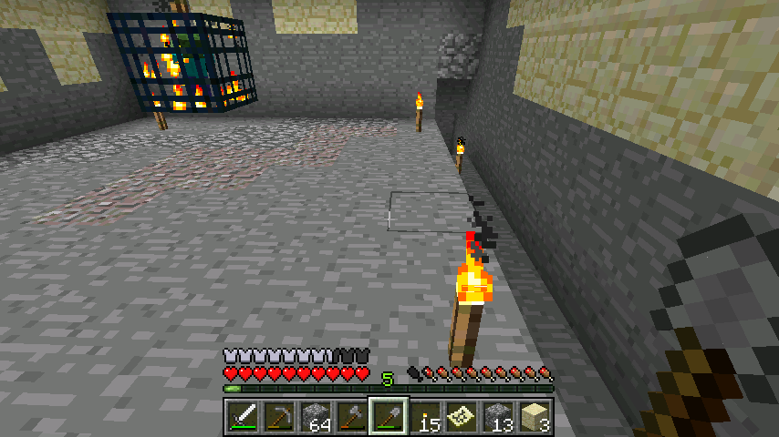
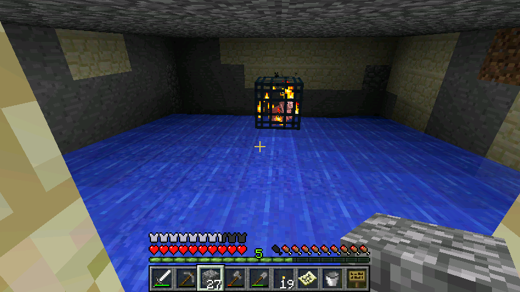

首页
上一页
2
3
4
5
6
7
7
8
9
10
11
12
下一页
末页
defanive2
无尽黑夜
14
好了又打了几个小时，整理一下图片，回复一下大家，马上就开始直播
233楼
2012-08-04 18:36
defanive2
无尽黑夜
14
到了地牢，村庄就在隔壁
不过忘记带食物了，于是收了村民的小麦 = =
不过还是很有良心的帮他们重新种上了
235楼
2012-08-04 18:42
defanive2
无尽黑夜
14
挖出一个9x9x3的区域，刷怪笼浮空在正中央
这个是刷怪笼刷怪的区域，当然你也可以把9x9x3全都填了只留一个地方让怪物生成，不过这样明显效率就不高
236楼
2012-08-04 18:45
defanive2
无尽黑夜
14

在9x9的最边向下挖出一条沟壑8x1x1，然后再向下挖一个3x1x1
其实这些随意设计，目的就是把全部怪物都集中到一个出口
然后出口可以做岩浆陷阱，或者像我一样做电梯然后重力陷阱
237楼
2012-08-04 18:47
defanive2
无尽黑夜
14
建造电梯，一个是上升区间另外一个就是空的掉落区间
掉落高度是19
PS 说一下，僵尸刷怪笼是最没用的刷怪笼，掉落资源没用，做经验塔也不好
原因是僵尸有默认的防护，可以吸收20%的伤害，因此空手一击是无法杀死的
这就导致了，要么选择用剑来一击杀，要么每只怪都打两次才死
所以僵尸刷怪笼实在不是个好资源，但是也只能将就用了
23的掉落高度可以把10血的怪物降到0.5血，但是既然都打算用剑了，就可以再把高度降低一点，19就可以刚好用剑一击杀
238楼
2012-08-04 18:51
defanive2
无尽黑夜
14
水流全部铺上，水平的把怪物冲向8x1x1的沟壑
对了上面的图忘记说了，3x1x1的沟壑是连接到水电梯的上升区间的
PS 这里是1.3里面的一个BUG，单机是用本地服务器的联机模式，可见刷怪笼显示猪的BUG还是时不时的出现
239楼
2012-08-04 18:56
defanive2
无尽黑夜
14
水电梯结构很简单，就是一格水一格牌子
PS 1.3里面牌子可以堆叠了，实在是一个很好的改进，这对建造这类结构方便很多
240楼
2012-08-04 18:59
defanive2
无尽黑夜
14

最后一步就是移除光源，然后封闭
241楼
2012-08-04 19:01
defanive2
无尽黑夜
14
刚封好就马上有怪来了，刷怪笼速度真的不是吹的
测试一下，一剑秒一只，很不错
242楼
2012-08-04 19:04
defanive2
无尽黑夜
14
盖了个简单的房子，反正也不是长住，随意一点
243楼
2012-08-04 19:09
defanive2
无尽黑夜
14
杀了一堆僵尸，升级还是挺快的
244楼
2012-08-04 19:10
defanive2
无尽黑夜
14
我当然还记得这个村民是交易生牛肉的，所以换了3个绿宝石
PS 第一张图是真的卡进去了，站在那里动不了，跳了几次也跳不上来
最后还是我拯救了他，不然晚上僵尸就把他QJ了
245楼
2012-08-04 19:12
defanive2
无尽黑夜
14
好吧现在既然这么无聊，去把沙漠寺庙的资源给拿了
246楼
2012-08-04 19:13
defanive2
无尽黑夜
14
进入寺庙，看起来RP很好，没有刷怪不小心炸了
撸爆了蓝色羊毛之后，可以看见暗室里面，正下方就是石质压力板
直接跳下去的话，除了摔个半死，还触发了TNT，必死无疑了
不过即使是直接跳，用某些技巧还是可以保命的，但是箱子里面的东西就不一定保得住了
248楼
2012-08-04 19:17
defanive2
无尽黑夜
14
取胜的方法有很多，常见的有倒水和挖掘
倒水就是通过在上面倒一桶水，下潜破坏压力板（即使触发了TNT，水中也可以保你不死）
不过考虑到有淹死的可能，而且水流会把你推来推去，可能意外踩到踏板
所以我采用挖掘的方法，从外墙挖一条路下来
250楼
2012-08-04 19:21
defanive2
无尽黑夜
14
破坏了压力板，挖开地板可以看到一层的TNT
这也算是寺庙里面很重要的资源，等价于45个火药（还是36个火药？好久不玩生存都忘了）
251楼
2012-08-04 19:23
defanive2
无尽黑夜
14
四个箱子里面的东西，比较重要的有5块金，1块铁，和1个钻石
252楼
2012-08-04 19:29
defanive2
无尽黑夜
14
这种creeper砂岩挖了几个，走咯
外面的结构还是想留完整，作为1.3的一大特色保留下来
253楼
2012-08-04 19:30
defanive2
无尽黑夜
14
在发帖的这段时间早就升级到LV30了，可以回家附魔了
这次出来的收获还是很不错的，经验塔造了之后算是造福自己了
希望这次附魔可以出好东西，不过要再造一个钻石稿
PS 有打算做一个地底水路加速从这里到家里的来回
这边旁边就是雨林树木资源很足，加上经验塔还有村庄，沙漠视野也开阔
其实搬家都可以了，不舍得还是不搬了，当这里第二活动中心
造水路会花很多时间，不过速度是很不错的
254楼
2012-08-04 19:34
defanive2
无尽黑夜
14
好了存图直播完了，我来回复一下大家，然后继续打MC
打算再附魔一个钻石稿
短期目标貌似暂时就没有了，打算把羊场的各种颜色都搞起来，不过也是无聊活，收集染料算是挺无聊的
255楼
2012-08-04 19:36
defanive2
无尽黑夜
14
好吧来直播一下附魔的结果
PS 257L的朋友说到僵尸会掉铁制器具，的确如此
看254L的截图，这30级的刷经验过程，得到了一个铁剑，一个铁块和一个铁铲
258楼
2012-08-04 20:03
defanive2
无尽黑夜
14
从沙漠寺庙里面获得了一个钻石，再在矿道的储备里面挖了2个钻石，3个合成一个钻石稿
希望附魔爆RP
259楼
2012-08-04 20:04
defanive2
无尽黑夜
14
1.3的附魔系统更改还是很好的，不用不断的放、取出来刷出最高附魔等级
一放上去就是LV30的附魔
260楼
2012-08-04 20:06
defanive2
无尽黑夜
14
RP爆发了！得到了FortuneIII和UnbreakingIII！
FortuneIII平均来说可以让矿物产量翻倍，而UnbreakingIII可以让耐久度翻4倍
对于钻石稿来说，4倍耐久度意味着6000+次的有效使用，估计怎么挖都用不完了！
261楼
2012-08-04 20:14
defanive2
无尽黑夜
14
去吃饭
262楼
2012-08-04 20:17
defanive2
无尽黑夜
14
大家希望看一下我的经验塔的
这个是我在创作模式演示的内部结构
萤石为刷怪塔，玻璃是为了演示离地面有一格
白色区域是第一级阶梯，9x8，水流从远端处冲向紫色区域，
紫色区域为第二阶梯，8x1，从左端冲向蓝色区域
蓝色区域为第三阶梯，3x1，将怪物送上红色区域
红色区域是水电梯，根据设计决定高度，目的是制造重力陷阱将怪物血减少到设计水平
264楼
2012-08-04 21:32
defanive2
无尽黑夜
14
水铺好之后大概是这样的
怪物从白色区域到紫色区域到蓝色区域，再从红色区域的水电梯上升到一定高度并掉落受伤
265楼
2012-08-04 21:34
defanive2
无尽黑夜
14
水电梯的构造，一格水一格牌子
怪物为了不让自己淹死会尝试一直往上游并达到足够高
顶端一个简单的水流将怪物冲向竖井，摔落受伤
注意水电梯顶端应该设置好屋顶，保证内部空间是2格高
这样怪物第一不会受到阳光伤害，第二不会在水中跳跃，保证了摔落的高度被严格控制
266楼
2012-08-04 21:37
defanive2
无尽黑夜
14
这种设计是比较基础的一种设计，刷怪笼9x9x3的刷怪区域都在控制范围内，保证了不漏怪
需要保证刷怪笼内部无任何光源，这样可以让刷怪效率最大化
摔落高度可以自己在创作模式实验，如果没记错的话，24是普通怪物的死亡高度（即是23是剩半格血，非僵尸空手一击死），44是小黑的死亡高度
267楼
2012-08-04 21:43
defanive2
无尽黑夜
14
现在没什么事做，做什么呢？
先把全部储备的钻石都给挖了
顺便应该附魔弓，应该把弓附魔出一个无限弓箭
当然如果能找到一个骷髅地牢的话也不错，毕竟附魔的弓也会有耐久用完的一天
不过这些都是YY，挖完钻石还是先探索地图，看看有什么惊喜
269楼
2012-08-04 22:16
首页
上一页
2
3
4
5
6
7
7
8
9
10
11
12
下一页
末页